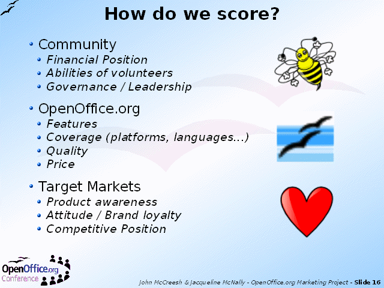

Notes:
The next stage of the workshop took a very quick look at the OpenOffice.org Community, the product, and its target markets. Participants were asked to vote on a show of hands:
1=Poor
5=Excellent
for each of the ten items shown on the slide. From this emerged a view as to whether each factor was a strength or a weakness for OpenOffice.org.
Overall, the OpenOffice.org product was judged to be in a stronger position than the Community.
It says something for the overall optimism of the participants that 3.5 seemed to be the most common score...